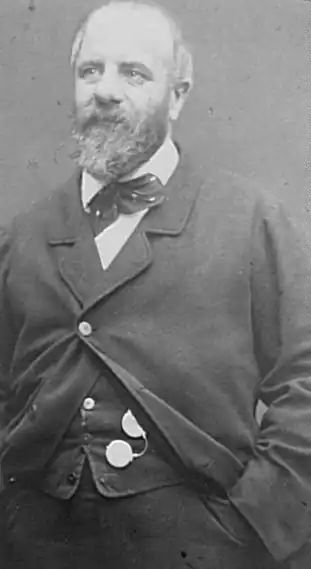

4 жовтня 1816 року, о Парижі народився Ежен Потьє — автор одного всім відомого гімну, називати який і цитувати ми не будемо — так, про всяк випадок, якщо вже це всім відомий твір під забороною на Україні.
Е. Потьє — син робiтника i сам робiтник — прожив довге і бурхливе життя. Він взяв особисту участь у всіх революціях, що відбувалися у Франції XIX століття. Воював на барикадах в 1848 році і був членом Паризької комуни, ставши одним з останніх її захисників. Після поразки Комуни Потьє переховувався і змушений був тікати до Англії, звідти перебравшись до Америки. Тільки в 1880 році, після амністії комунарів, він зміг повернутися на батьківщину, щоб прожити ще сім років, важко, проте, вже хворіючи. Вражаючий збіг: пішов з життя Ежен Потьє майже рівно за 30 років до Жовтневої революції — 6 листопада 1887 року.
Помер він у злиднях (як і творець безсмертної "Марсельєзи" Руже де Ліль), однак на похорон пролетарського поета, труну якого прикрасив червоний шарф комунара, прийшли на знамените кладовищі Пер-Лашез тисячі простих парижан. Прощання з покійним перетворилося на грізну маніфестацію. Дочка Карла Маркса Лаура Лафарг дала на похоронах обіцянку зробити все від неї можливе для поширення поетичної спадщини Ежена Потьє серед робітників усіх країн світу. "Пісні Потьє, — писала вона, — найкращі і навіть єдині революційні пісні, якими могли б похвалитися французи нашого покоління". Писати вірші Е. Потьє почав ще в юності, навчаючись у революційного поета П'єра Жана Беранже (1780-1857). Свою першу пісню — "Хай живе свобода!" — він написав у 14 років, відгукнувшись на революцію 1830 року, — і тут, звичайно, згадується "Свобода на барикадах" Ежена Делакруа, написана за мотивами тих же подій. У 1840-і роки Потьє виступив з бойовою, гостро соціальної поезією, малювала лиха народних мас, бичували виразки капіталізму і яка закликала до революційної боротьби. "Шансон" він зробив могутньою зброєю революційної пропаганди. Перебуваючи під впливом ідей утопічного соціалізму та анархізму, в 1870 році Ежен Потьє, проте, приєднався до французької секції Першого Інтернаціоналу, в еміграції співпрацював з соціалістами США, а на вильоті життя вступив в марксистську Робочу партію, засновану Жюлем Гедом (1845-1922 ). Хвилі революції і реакції змінювали один одного, і якщо, наприклад, в початку 1848-го Потьє оспівував революцію, енергію народного бунту, то після поразки Червневого повстання йому залишалося тільки лише журитися з цього приводу, поєднуючи похмурий песимізм з незгасною ненавистю до перемогла буржуазії. За часів правління Наполеона III поет не уникнув коливань, часом допускав мирову ставлення до капіталістичних порядків — але то були, скоріше, лише хвилини слабкості в умовах економічного підйому і під оманливим враженням від соціальної демагогії бонапартизму. Потрібно мати на увазі й ту обставину, що Потьє був ремісником, а не робочим великого, машинного, справді індустріального виробництва. Він все життя невтомно вчився, читав книги, студіював політекономію і філософію, однак так і не зумів повністю подолати дрібнобуржуазні погляди, надзвичайно поширені в середовищі французьких робітників того часу і сильно заважали організації їхньої боротьби. Зате вірність Паризької комуни Ежен Потьє непохитно зберіг до останніх днів життя. Своє головне твір він написав у червні 1871 року, за гарячими, так би мовити, слідах поразки повстання паризьких робітників і кривавої розправи "версальцев" над ними. Можна легко уявити собі, які почуття відчував комунар — повержений, загнаний в глухе підпілля, перебував під загрозою арешту і неминучої в такому випадку страти. У якийсь момент газети навіть повідомили, що "відомий бунтівник" Потьє схоплений і розстріляний — і слух про це пройшовся серед кинутих до в'язниць соратників співака робочої Франції. Сам він уже немолодий, і його на той час уже не слухалася одна рука — що, однак, не завадило Потьє особисто битися на барикадах Парижа. Ще в юності він дав клятву своєму вчителеві і кумиру Беранже: як би не склалася його доля, він завжди буде боротися за справу трудящих! І клятву свою Ежен Потьє дотримав. Він був одним з найбільш енергійних, діяльних і самовідданих членів Комуни. Потьє, що мав репутацію непідкупно чесного і бездоганно хороброго людини, обрали в ЦК Національної гвардії, він взяв участь в організації Комітету громадського порятунку. Разом з видатним живописцем Гюставом Курбе (1819-77) Ежен Потьє працював у Федерації художників. Існують підрахунки істориків, що на 2,5 тисячі комунарів, загиблих в бою, довелося, щонайменше, 30 тисяч, перебиті озвірілими ворогами вже після придушення повстання. Кров струмками текла по мостовим, залила стіну на кладовищі Пер-Лашез, у якій кати розстрілювали останніх бійців Комуни. Не забув Потьє і того, як була потоплена в крові революція 1848 року, як убивали без суду і слідства всякого, у кого руки пахли порохом. А. И. Герцен — теж очевидець тих подій — написав повні гніву слова: "За такі хвилини ненавидять десять років, мстять все життя. Горе тим, хто прощає такі хвилини! ". І ось в такій трагічній ситуації Е. Потьє, змінивши багнет на перо, написав вірш, пронизане вірою в неминучість остаточної перемоги, який кличе в рішучий бій. У 1871 році старого Потьє чомусь не охопило то відчай, яка заволоділа молодою людиною в 1848-м! Щось змінилося в його душі за ці без малого чверть століття! З'явилася переконаність, і заснована, очевидно, на досвіді Паризької комуни — цього "першого штурму неба", за висловом Маркса. Самому Е. Потьє не судилося почути свій твір зодягнена в музичну форму — музика до нього була написана тільки після смерті автора тексту. Виданий в 1887-му, незадовго до кончини Потьє, збірник "Революційні пісні" потрапив в руки до П'єру Дегейтера (1848-1932), робітникові-мебельникові родом з Бельгії, яке проживало в Ліллі, за сумісництвом — музикантові-любителю. У 1871 році він, солдат французької армії, з загоном товаришів намагався пробитися до обложеного Париж на виручку комунарам — але зазнав невдачі. Вражений віршем Потьє, П. Дегейтера і склав до нього могутню мелодію — і створене зусиллями цих двох осіб твір було вперше виконано 23 червня 1888 року на робочому святі Союзу газетярів у Ліллі. Головне твір Потьє переведено на всі основні мови світу. Тільки російською воно відомо в декількох варіантах. На українську мову його переклав в 1919 році Микола Вороний (1871-1938), поет, між іншим, націоналістичного спрямування, один із засновників Центральної ради. Зарахувати цю людину, який був розстріляний НКВД в 1938 році, до прихильників "тоталітарного режиму" ніяк не можна, але, тим не менш, його полум'яні рядки віднесені до символів "пропаганди тоталітаризму"! Серед перекладачів головного творіння Потьє можна зустріти видатних поетів. Так, на абхазький мову його переклав основоположник абхазької літератури і літературної мови, народний поет Абхазії Дмитро Гулиа (1874-1960). Симфонічну розробку гімну виконав в 1937-му Дмитро Шостакович. Знаменитий твір Ежена Потьє увійшло і в образотворче мистецтво — наприклад, відомий малюнок італійця Ренато Гуттузо "Дівчина, яка співає ***". Або куди більш відомий в нашій країні триптих Гелія Коржева "Комуністи". Твір Е. Потьє — П. Дегейтера намагалися забороняти з самого моменту його появи. Сам П'єр Дегейтера побоювався переслідувань і тому на титульному аркуші випущеної брошурки з текстом і нотами гімну попросив поставити лише його прізвище — без імені. Через це, до речі, згодом на авторські права намагався претендувати брат композитора Адольф, і тільки після довгої судової тяганини в 1922 році автором музики був офіційно визнаний П'єр Дегейтера. Втім, "полуанонімность" його в 1888 році не врятувала — він був звільнений і потрапив в підприємницькі "чорні списки". Як і Потьє, Дегейтера бідував, і в останні роки життя єдиним засобом існування для нього стала особлива пенсія, призначена радянським урядом. Іменем Дегейтера названа нині площа в Ліллі, а в його рідному бельгійському Генті йому встановлено пам'ятник. Французького вчителя Армана Гослена за публікацію головного твору Ежена Потьє свого часу звинуватили в "підбурюванні до вбивства" і посадили на один рік до в'язниці. Відомий і такий епізод: в 1930-і роки в Румунії, в місті Плоєшті пройшов судовий процес проти робітників-нафтовиків, вся вина яких полягала лише в тому, що вони співали гімн, складений Потьє і Дегейтера.